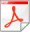

PDF отчет о трафике пользователей
PDF отчет создается автоматически samsdaemon-ом в 23.59 и содержит информацию о трафике
пользователей с начала месяца. Отчет может создаваться как при помощи библиотеки fpdf
(в составе SAMS), так и PDFLib. PDFLib проприетарная библиотека с бОльшими возможностями,
но пока разницы в создаваемых отчетах нет.
Отчет доступен при нажатии на кнопку  в отчетах пользователей.
Если отчет не создан, то кнопка отсутствует.
Для активации создания отчетов необходимо поставить галочку в пункте
"Создавать PDF отчеты" настроек WEB интерфейса.